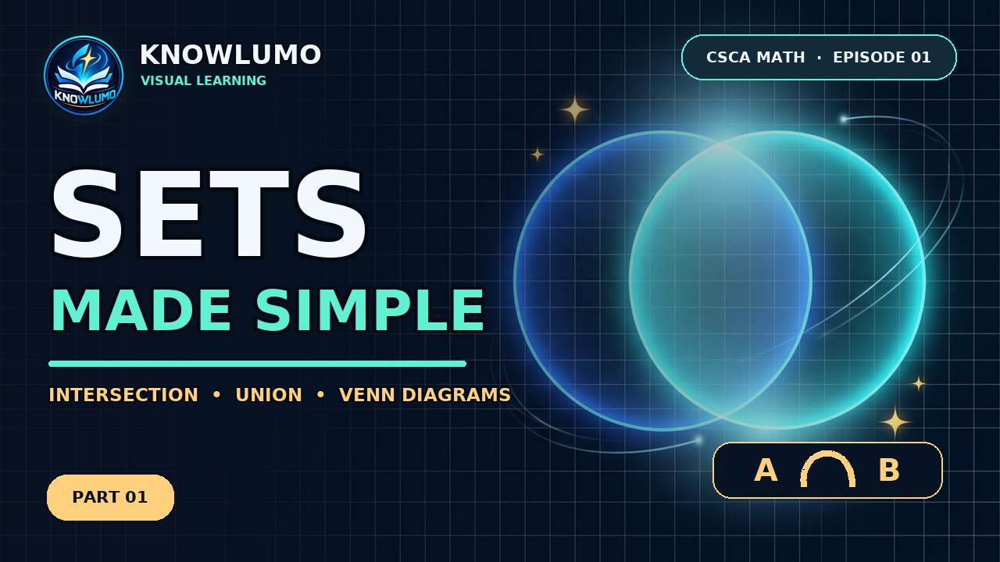

Knowlumo — CSCA Math Episode 01
Local delivery preview. These files are not published on YouTube or Instagram.
Full lesson with Knowlumo outro
Episode 01 thumbnail

Vertical quick quiz — Shorts / Reels
Publication kit
Ready-to-copy titles, descriptions, tags, hashtags, bios and pinned comments (EN)
Launch order and manual checks (RU) · Vertical Reels cover · Square feed cover


Notes
Delivery notes and manual review checklist (RU)
The SUBSCRIBE graphic is static artwork, not a clickable YouTube end screen. No URL is burned into the short video.